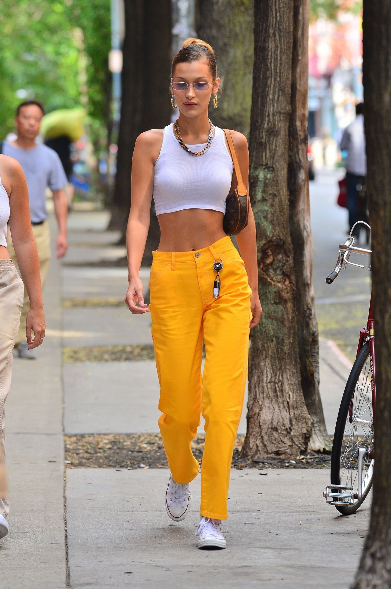

Модель, активистка и икона стиля
Белла Хадид (полное имя — Изабелла Джин Хадид) родилась 9 октября 1996 года в Лос-Анджелесе, штат Калифорния. Её отец — палестинский бизнесмен, а мать — голландская модель. Белла имеет старшую сестру Джиджи Хадид, которая также является известной моделью. С самого детства Белла проявляла интерес к моделированию, а в 2012 году подписала свой первый контракт с агентством IMG Models. С тех пор её карьера стремительно развивалась.
Белла Хадид быстро завоевала популярность благодаря своей уникальной внешности и профессионализму на подиуме. Она работала с ведущими мировыми брендами, такими как Dior, Chanel, Versace, Balmain, Fendi и многие другие. Белла также является лицом таких крупных рекламных кампаний, как Balmain и Tommy Hilfiger. Она принимала участие в показах Victoria's Secret и регулярно появляется на обложках крупных модных журналов, таких как Vogue и Harper's Bazaar.
Белла Хадид является одной из самых востребованных моделей на сегодняшний день. Среди её достижений можно выделить:
Белла Хадид известна не только своей карьерой, но и выдающимся личным стилем. Она часто демонстрирует свою любовь к уличной моде и предпочитает сочетание классических и кэжуал образов. В свободное время Белла увлекается спортом, путешествиями и активно занимается благотворительностью, поддерживая экологические и социальные проекты.
